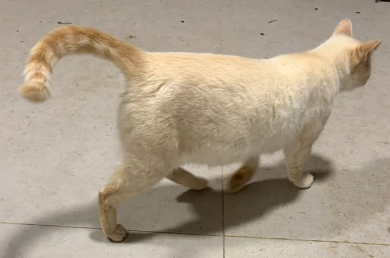

A Agência de Detetives
A Agência de Detetives recebe casos misteriosos toda semana. Cada caso chega como um dossiê: depoimentos de testemunhas, registros de câmeras, anotações da perícia e declarações dos suspeitos. Algumas pistas convivem em paz; outras se contradizem, e alguém mente ou se engana.
- Nome
- Estrela
- Espécie
- Gata
- Pelagem
- Branca, com rosto, orelhas, patas e cauda cor de creme
- Endereço
- O museu inteiro, que ela reivindicou como lar
- Vista por último
- Corredor das galerias, durante a noite
O caso mais famoso da agência é o da Estrela, uma gata charmosa que um dia entrou no museu da cidade e decidiu que ele era a casa dela: dorme na bilheteria, patrulha as galerias e ganhou até um lugar reservado no banco da entrada. Certa manhã, a Estrela sumiu. Desde então, a agência coleciona pistas sobre a noite do desaparecimento, e cada dossiê desta atividade é uma parte dessa investigação.
O trabalho de vocês é o de uma equipe de detetives lógicos: em vez de confiar na intuição, vocês usarão a resolução proposicional para verificar, com rigor, se o conjunto de pistas leva a uma contradição.
| Na agência | Na lógica | Exemplo |
|---|---|---|
| Pista | Premissa (fórmula lógica) | J → D: “se entrou pela janela, a janela quebrou” |
| Ficha de evidência | Cláusula | {¬J, D} |
| Pistas que se opõem diretamente | Literais complementares | S “o suspeito estava no local” e ¬S “não estava” |
| Cruzar duas fichas | Aplicar a resolução | {¬J, D} com {J} gera {D} |
| Contradição encontrada | Cláusula vazia □ | Caso resolvido como insatisfatível CASO RESOLVIDO |
| Nenhuma contradição | Sem □ ao final da busca | Caso satisfatível: as pistas podem coexistir SEM CONTRADIÇÃO |
Os conceitos da investigação
Antes de abrir os dossiês, revisem as ferramentas. Cada ficha traz a ideia e um exemplo no contexto do caso.
Proposição
Afirmação que é verdadeira ou falsa.
S: “o suspeito estava no local”
Literal
Uma proposição ou a sua negação.
S, ¬S, A, ¬A
Cláusula
Disjunção (“ou”) de literais. Basta um literal verdadeiro para ela ser verdadeira.
¬S ∨ A
Forma normal conjuntiva (FNC/CNF)
Conjunção (“e”) de cláusulas: uma lista de exigências, todas obrigatórias.
(¬S ∨ A) ∧ S ∧ ¬A
Representação por conjuntos
Cada cláusula vira um conjunto de literais; a fórmula vira um conjunto de cláusulas.
{ {¬S, A}, {S}, {¬A} }
Regra de resolução
Duas cláusulas com literais complementares geram uma nova cláusula sem esse par.
{¬S, A} + {S} ⟶ {A}
Resolvente
A cláusula nova produzida pela resolução. É uma consequência lógica das duas fichas cruzadas.
{A}
Cláusula vazia
Cláusula sem nenhum literal, sempre falsa. Surge ao cruzar {A} com {¬A}.
□ (ou { })
Insatisfatibilidade
Nenhuma valoração torna todas as cláusulas verdadeiras ao mesmo tempo.
{A} e {¬A} juntas
Prova por refutação
Para provar uma conclusão, eu a nego e mostro que isso gera contradição.
Premissas + ¬C ⟶ □
Em conjuntos: o resolvente é (C₁ − {L}) ∪ (C₂ − {¬L}). Juntamos as duas fichas e retiramos
apenas o par L / ¬L. Se não sobrar nada, temos a cláusula vazia □.
Para mostrar que uma conclusão C segue das premissas, vocês acrescentam a sua negação ¬C
ao conjunto de cláusulas. Se a resolução produzir a cláusula vazia, as premissas e ¬C não podem ser
verdadeiras juntas. Portanto, sempre que as premissas forem verdadeiras, C também será:
C é consequência lógica das premissas.
Passo a passo da investigação
- Leiam o caso e identifiquem as proposições. Procurem afirmações que admitem os valores verdadeiro ou falso.
- Definam os símbolos proposicionais. Por exemplo:
S“o suspeito estava no local”;A“o alarme foi desativado”;C“há câmera registrando a entrada”. - Traduzam cada pista para lógica proposicional. Cuidado com “se… então”, “ou” e “não”.
- Convertam todas as fórmulas para FNC. Usem
P → Q ≡ ¬P ∨ Qe as leis de De Morgan. - Escrevam o conjunto de cláusulas. Cada cláusula como conjunto de literais, numerada:
(1) {¬S, A}. - Acrescentem a negação da conclusão. Só quando o caso pedir para provar uma afirmação.
- Procurem pares de cláusulas com literais complementares. Comecem pelas cláusulas unitárias: elas encurtam o caminho.
- Apliquem a regra de resolução e registrem o resolvente. Indiquem as cláusulas usadas e o literal cancelado.
- Repitam o processo. Continuem até encontrar a cláusula vazia ou até não surgirem resolventes novos e úteis.
-
Concluam.
Surgiu □ Há contradição: o caso é insatisfatível. Se vocês negaram a conclusão, ela está provada.Não surgiu □ Nenhuma contradição encontrada: o caso é satisfatível (ou inconclusivo, se a busca não foi completa).
Exemplo resolvido: “O desaparecimento da Estrela”
Na manhã seguinte, a Estrela não apareceu para o café na bilheteria. A câmera do corredor registrou a gata pela última vez durante a noite, e o dossiê traz três pistas:

Pistas
1. Se o sequestrador da Estrela entrou pela janela, então a janela estava destruída.
2. O sequestrador entrou pela janela.
3. A janela não estava destruída.
Símbolos
J: o sequestrador entrou pela janela.
D: a janela estava destruída.
Fórmulas e cláusulas
J → D ≡ ¬J ∨ D ⟶ (1) {¬J, D}
J ⟶ (2) {J}
¬D ⟶ (3) {¬D}
| Passo | Cláusulas cruzadas | Par complementar | Resolvente | Em linguagem natural |
|---|---|---|---|---|
| 1 | (1) {¬J, D} e (2) {J} | J / ¬J | (4) {D} | Se entrou pela janela, ela quebrou; e ele entrou. Logo, a janela estava destruída. |
| 2 | (4) {D} e (3) {¬D} | D / ¬D | □ | A janela estaria destruída e não destruída ao mesmo tempo: impossível. |
Como derivamos a cláusula vazia, o conjunto de pistas é insatisfatível. Na história, as evidências se contradizem: não é possível que o sequestrador tenha entrado pela janela, que isso a destrua e, ao mesmo tempo, que a janela esteja intacta. Pelo menos uma pista é falsa, e a próxima pergunta do detetive é: qual? Talvez a Estrela nem tenha sido levada.
Organização em duplas
A turma trabalha em duplas, e cada dupla recebe um dossiê (Seção 06). Há quatro papéis; como a dupla tem duas pessoas, cada uma assume dois papéis e vocês trocam os papéis durante a atividade, por exemplo depois da conversão para cláusulas. Se houver mais duplas do que dossiês, um mesmo caso pode ir para duas duplas, e a comparação das resoluções entra na apresentação.
PAPEL 1
Detetive principal
Lê o caso, organiza as pistas e conduz a conversão para cláusulas.
PAPEL 2
Perito lógico
Verifica as equivalências, a FNC e cada aplicação da regra de resolução.
PAPEL 3
Registrador do caso
Anota cada passo, os resolventes e a conclusão no modelo de registro.
PAPEL 4
Advogado do diabo
Questiona a escolha das cláusulas e se a conclusão está bem justificada.
| Dossiê | Característica |
|---|---|
| 1 · O Álibi do Relógio | Encadeamento de implicações |
| 2 · A Pegada no Jardim | Prova por refutação de uma conclusão |
| 3 · O Cofre do Museu | Investigação sem contradição |
| 4 · O Testemunho Contraditório | Depoimentos incompatíveis |
| 5 · O Suspeito Invisível | Caso curto; também serve de extra para quem terminar antes |
Os dossiês das duplas
Em todos os casos, a tarefa é a mesma: definir os símbolos (quando não forem dados), traduzir as pistas, converter em cláusulas, aplicar resolução e concluir se há contradição, explicando o que isso significa na história. Os campos de registro servem para rascunho na tela; a entrega oficial é o modelo de registro da Seção 09.
O Álibi do Relógio
Na noite do sumiço da Estrela, um vaso do museu foi quebrado durante uma luta na sala de música. O principal suspeito afirma que passou a noite no baile, no salão ao lado.
Pistas
- Se o relógio da sala parou às 22h, então a luta aconteceu às 22h.
- O relógio da sala parou às 22h.
- Se a luta aconteceu às 22h, então o suspeito estava na sala às 22h.
- Três convidados juram que o suspeito estava no baile às 22h.
- Ninguém pode estar no baile e na sala ao mesmo tempo.
Símbolos sugeridos
R: o relógio parou às 22h · L: a luta foi às 22h · S: o suspeito estava na sala às 22h · B: o suspeito estava no baile às 22h
Tarefa
O álibi do suspeito é compatível com as outras pistas? Convertam tudo em cláusulas (atenção à pista 5) e apliquem resolução.
A Pegada no Jardim
Na manhã seguinte ao sumiço da Estrela, a perícia encontrou uma pegada de bota no canteiro do jardim. A delegada quer saber se as pistas permitem acusar o jardineiro.
Pistas
- Se choveu à noite, então a terra do jardim estava molhada.
- Choveu à noite.
- Se há pegada de bota e a terra estava molhada, então o jardineiro passou pelo jardim depois da chuva.
- Há uma pegada de bota no jardim.
Conclusão a investigar
“O jardineiro passou pelo jardim depois da chuva.”
Tarefa
Definam os símbolos. Provem a conclusão por refutação: acrescentem a sua negação e busquem a cláusula vazia. Atenção à conversão da pista 3.
O Cofre do Museu
O cofre onde o museu guardava a coleira de ouro da Estrela foi encontrado aberto. O chefe da segurança garante que foi arrombamento, mas a perícia tem dúvidas.
Pistas
- O cofre foi aberto com a chave ou foi arrombado.
- Se o cofre foi arrombado, então o alarme foi desativado.
- O segurança estava de plantão.
- O alarme não foi desativado ou o segurança não estava de plantão (o alarme só é desligado na troca de turno).
Símbolos sugeridos
K: o cofre foi aberto com a chave · F: o cofre foi arrombado · A: o alarme foi desativado · S: o segurança estava de plantão
Tarefa
As pistas provam que o cofre foi arrombado? Acrescentem a negação dessa conclusão e apliquem resolução até não surgirem resolventes novos. Se não aparecer □, encontrem uma valoração que satisfaça todas as cláusulas e expliquem o que ela conta sobre o caso.
O Testemunho Contraditório
Quatro fontes descrevem a fuga de um suspeito visto perto da caminha da Estrela. A delegada desconfia que alguma delas não diz a verdade.
Pistas
- Testemunha da rua: “Ele saiu pela porta dos fundos ou pela janela.”
- Vizinha do andar de cima: “Ele não saiu pela janela.”
- Técnico de segurança: “Se ele saiu pelos fundos, a câmera dos fundos o registrou.”
- Perícia: “A câmera dos fundos não registrou ninguém.”
Tarefa
Definam os símbolos e verifiquem, por resolução, se os quatro depoimentos podem ser verdadeiros ao mesmo tempo. O que a resposta diz sobre as testemunhas?
O Suspeito Invisível
Nenhuma câmera registrou o suspeito, e ele afirma que nunca esteve no museu. Será que ele é mesmo “invisível”?
Pistas
- O suspeito estava no local ou usou um disfarce.
- Se usou um disfarce, então deixou fios de peruca.
- Não foram encontrados fios de peruca.
Conclusão a investigar
“O suspeito estava no local.”
Tarefa
Definam os símbolos, neguem a conclusão e cheguem à cláusula vazia no menor número de passos que conseguirem.
Apresentação dos resultados
Cada dupla apresenta o seu caso em 3 a 4 minutos, no quadro ou no projetor, respondendo a estas perguntas:
1
Quais foram as proposições identificadas?
2
Como as pistas foram convertidas em cláusulas?
3
Quais cláusulas foram escolhidas para a resolução?
4
Quais literais complementares foram usados?
5
Qual resolvente foi obtido em cada passo?
6
Foi encontrada a cláusula vazia?
7
O caso é satisfatível ou insatisfatível?
8
O que a conclusão significa dentro da história do detetive?
Critérios de avaliação
| Critério | Pontos | Resolução excelente | Resolução incompleta |
|---|---|---|---|
| Identificação das proposições | 1,5 | Símbolos para todas as afirmações relevantes, cada um com uma frase declarativa clara. | Símbolos faltando, ambíguos ou que já incluem uma negação ou um conectivo. |
| Tradução das pistas para lógica proposicional | 2,0 | Conectivos corretos, inclusive o sentido do “se… então” e da negação de conjunções. | Condicional invertido, “ou” lido como “e”, pista esquecida. |
| Conversão para FNC e representação por conjuntos | 2,0 | Cada passo justificado por uma equivalência; cláusulas numeradas e escritas como conjuntos. | Conversão sem justificativa ou com erro de De Morgan; cláusulas misturadas com fórmulas. |
| Aplicação da regra de resolução | 2,0 | Cada passo cancela exatamente um par complementar; o resolvente está correto. | Dois pares cancelados de uma vez, resolução sem par complementar, literais perdidos. |
| Registro dos passos | 1,0 | Para cada passo: cláusulas usadas, literal cancelado e resolvente numerado. | Só o resultado final, sem o caminho percorrido. |
| Conclusão sobre satisfatibilidade | 1,0 | Classificação correta e interpretação dentro da história. | Classificação sem interpretação ou confundida (□ lido como “sem contradição”). |
| Clareza da apresentação | 0,5 | Responde às oito perguntas no tempo, com fala dividida na dupla. | Leitura do registro sem explicação ou fora do tempo. |
| Total | 10,0 | ||
Materiais de apoio
Mini glossário
- Literais complementares
- Um literal e a sua negação, como
Se¬S. - Cláusula unitária
- Cláusula com um só literal, como
{¬D}. É a pista mais valiosa: força o valor da variável. - Cláusula vazia (□)
- Cláusula sem literais; é sempre falsa. Encontrá-la prova que o conjunto é insatisfatível.
- Conjunto vazio de cláusulas (∅)
- Nenhuma exigência; é sempre verdadeiro. Não confundam com
□. - Satisfatível
- Existe pelo menos uma valoração que torna todas as cláusulas verdadeiras.
- Saturação
- Situação em que nenhum par de cláusulas gera um resolvente novo.
- Refutação
- Provar
Cmostrando que premissas +¬Clevam a□.
Lembrete visual da regra
Um par por vez · sobrou nada? É □.
Modelo de registro
DOSSIÊ: __________________________ DUPLA: __________________
1. Símbolos
___ : ____________________________________
___ : ____________________________________
2. Pistas em lógica proposicional
(P1) ______________ (P2) ______________ (P3) ______________
3. Conversão para FNC (com a equivalência usada)
______________________________________________________________
4. Conjunto de cláusulas (numeradas)
(1) { } (2) { } (3) { } (4) { }
Negação da conclusão, se houver: ( ) { }
5. Passos de resolução
Passo | Cláusulas | Literal cancelado | Resolvente
------+-----------+-------------------+-----------
1 | | |
2 | | |
6. Conclusão
[ ] Cláusula vazia encontrada: INSATISFATÍVEL
[ ] Sem cláusula vazia: SATISFATÍVEL (valoração: ______________)
O que isso significa no caso: __________________________________Erros comuns
Na prova por refutação, a conclusão entra negada. Se vocês acrescentarem {J} em vez de {¬J}, nunca encontrarão a contradição certa.
{A, B} e {A, C} não têm literal complementar: não existe resolvente entre elas. Juntar as duas fichas não é resolução.
De {A, B} e {¬A, ¬B} não sai □. Resolvendo um par por vez, sai {B, ¬B}, uma cláusula sempre verdadeira e inútil.
□ é uma cláusula sem literais (falsa). ∅ é um conjunto sem cláusulas (verdadeiro). Achar □ encerra o caso como insatisfatível.
P → Q vira {¬P, Q}, e não {P, ¬Q}. Quem é negado é o antecedente.
Simulador de resolução
O simulador serve para conferir um passo que vocês já fizeram no papel, não para substituir o
raciocínio. Digitem as cláusulas, escolham duas e vejam o que a regra produz. Para a negação, usem
¬, ~, ! ou -.
Cada cláusula entre chaves; literais separados por vírgula. A cláusula vazia é {}.
Conjunto atual:
Leiam as cláusulas e escolham duas para começar.